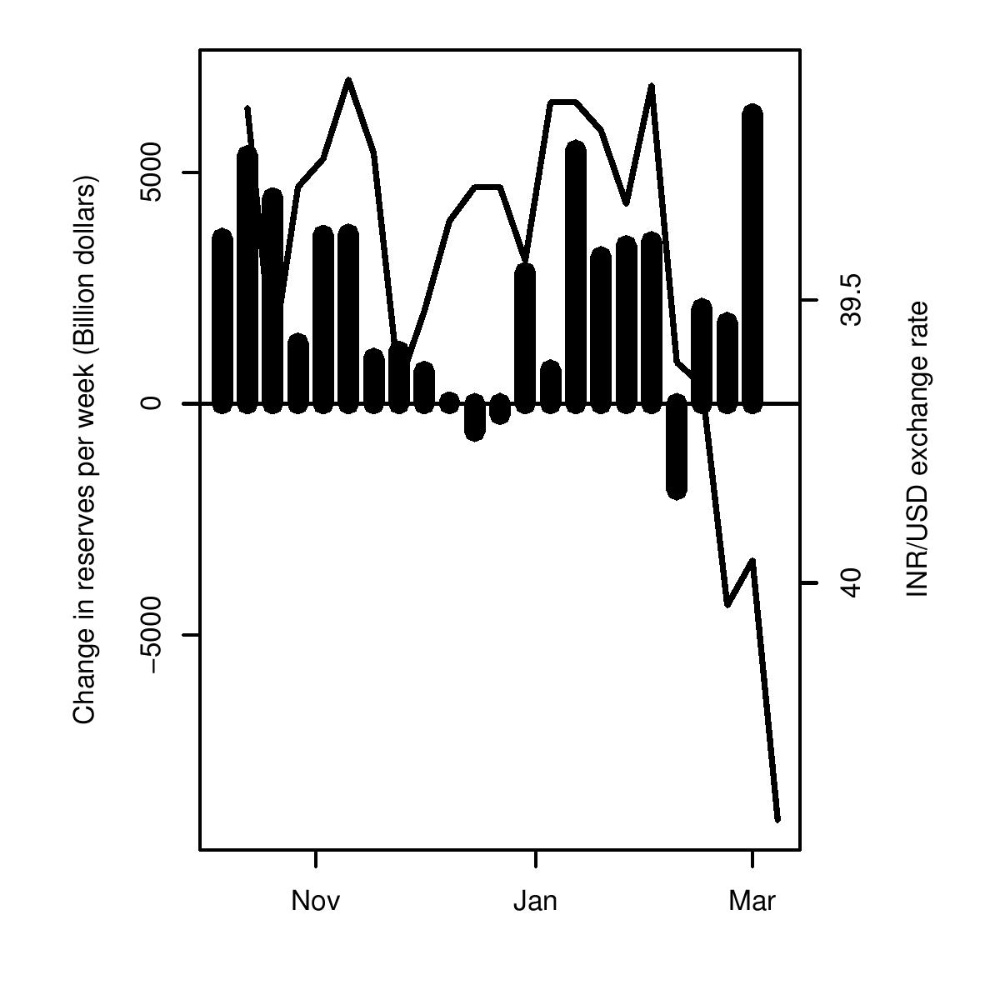

Engineering of the rupee
Indian Express, 12 March 2008
 February saw the US dollar weaken against world currencies. It fell against most major currencies in the world including the Euro, the British Pound and the Japanese Yen. This would have led us expect that the Indian rupee would also appreciate against the US dollar. But this is not what happened. February 2008 saw the Indian rupee depreciate. Does this suggest a reversal of the direction in the rupee will move? Have dollar inflows into India gone down and that is why the rupee is depreciating? A look at the data suggests that the pressure on the rupee to appreciate is as strong as ever.
What does the data tell us? If the depreciation of the rupee had been due to an outflow of capital putting pressure on the rupee to depreciate, there would have been either no change in the foreign exchange reserves held by the RBI (other than a small valuation/interest accrual change) or foreign exchange reserves should have declined as the RBI fought off the sudden pressure to ensure a smooth rupee.
However, data from the RBI suggests quite the opposite. There was a sharp increase in the foreign exchange reserves of the RBI. In the month of February reserves increased by 11.7 billion dollars. In the first two months of 2008, foreign exchange reserves have already increased by USD 25 billion. In other words, this suggests that the depreciation of the rupee was engineered.
After the cut in interest rates in the US since mid-2007, there has been a sharp increase in the interest differentials with India. This could be expected to lead to a sharp inflow of capital into India and a rupee appreciation.
How then did the rupee depreciate in February? Theq RBI has intervened not only as it normally does in the spot market, but also in forward markets. Keeping the rupee above Rs 39 per dollar has clearly been a big battle. This is visible from the large amounts of intervention that the RBI has undertaken in the last few months. Table 1 shows RBI's purchases in the dollar market. Between September and December RBI bought a total of USD 55.7 billion in both the spot and forward markets.
RBI will release foreign exchange market intervention data for January and February with a lag. What we have today, however, is data on changes in foreign exchange reserves. Foreign exchange reserves rose by 12.7 billion in January 2008, and by 11.7 billion in February 2008. Given the large spot purchases it would not be surprising to see that RBI also used the forward market to push the rupee down.
But why go all the way to pushing the rupee to depreciate? One possible answer is that too much money is coming in trying to take advantage of the one way bet and the interest differentials with respect to the US. There was money to be made by borrowing in the US and lending in India. Interest rates in India are higher and if the rupee was also going to get stronger, dollar returns would be even higher. In this situation the RBI might have tried to break the one-way bet by pushing the rupee to depreciate. While the rupee movement may fool some people for some time into thinking that there will be a depreciation, smarter market participants will not be fooled for long. Everyone is aware that this pace of intervention is unsustainable. Embarking on strategies like intervening in forward markets reveals the RBI's desperation. It builds up even stronger expectations that at some point, when too much pressure builds up, the RBI will have to let go.
Spot market Forward market (Purchases) (Stock) Apr 2007 2,055 May 2007 4,426 Jun 2007 3,192 Jul 2007 11,428 Aug 2007 1,815 Sep 2007 11,867 Oct 2007 12,544 4,990 Nov 2007 7,827 7,535 Dec 2007 2,731 8,238 Jan 2008 12,778 (?) N.A. Feb 2008 11,705 (?) N.A. In summary, while the rupee did depreciate in February, it did so on the back of trading by RBI and not market forces. This is a poor path in economic policy. There is a market distortion where the price of the rupee is too low. Easing this distortion requires a rupee appreciation. An artificial depreciation of the rupee is a step in the wrong direction. Intuitively, it is as awkward as a decision by the Ministry of Petroleum to cut the price of petrol when the world price of oil is rising.
Moreover, a rupee depreciation is inflationary. It is not a credible stance of monetary policy because it is politically incompatible with impending elections. It is obvious to market participants that this is an unsustainable policy. The profits from betting on rupee appreciation, as seen for capital coming into the country, are now bigger. With a combination of a large interest rate differential and a large distortion in the rupee, foreign capital now sees India as an extremely attractive opportunity to make a profit by exploiting the mistakes of monetary policy.
Back up to Ila Patnaik's media page
Back up to Ila Patnaik's home page